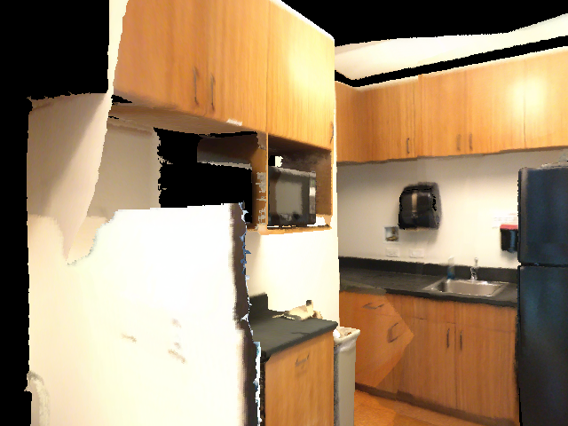
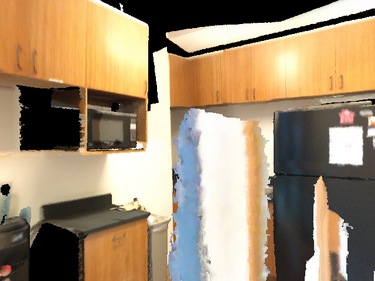
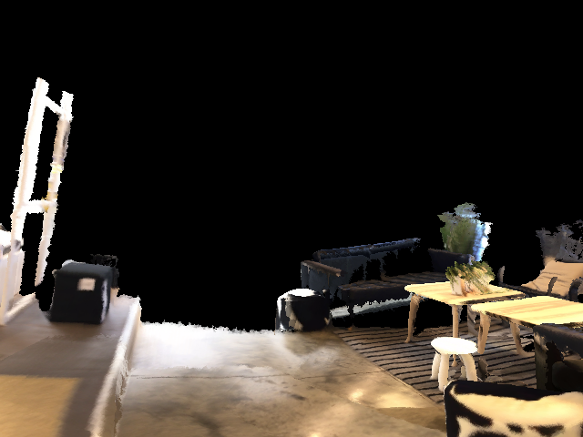
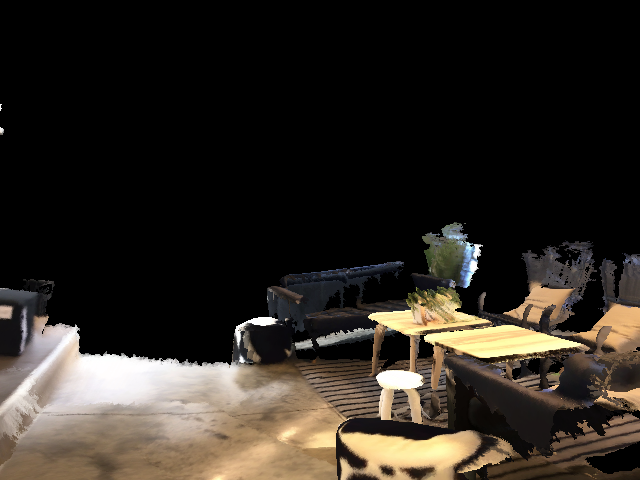
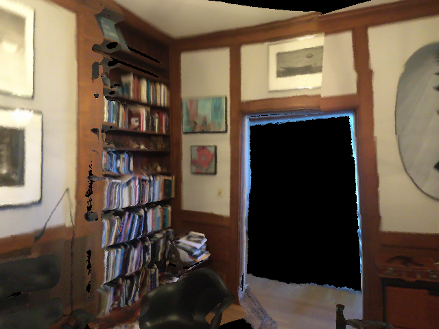
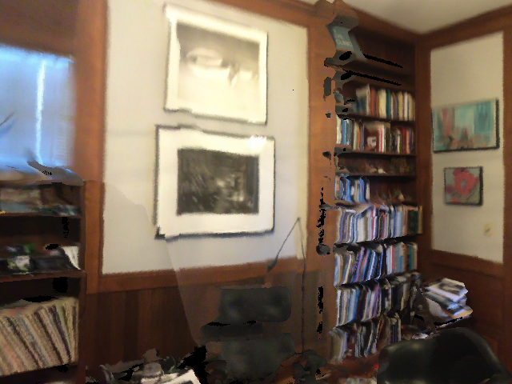
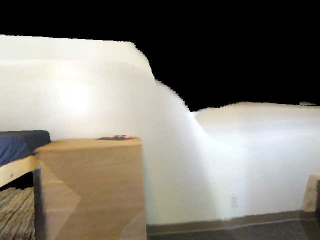
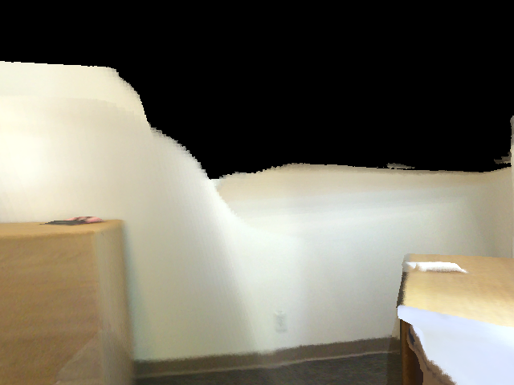
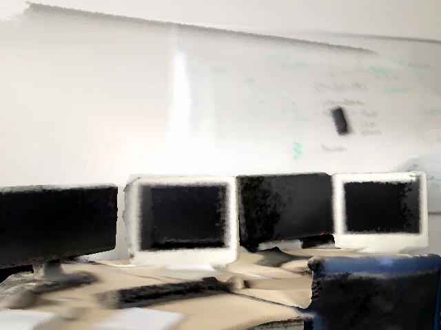
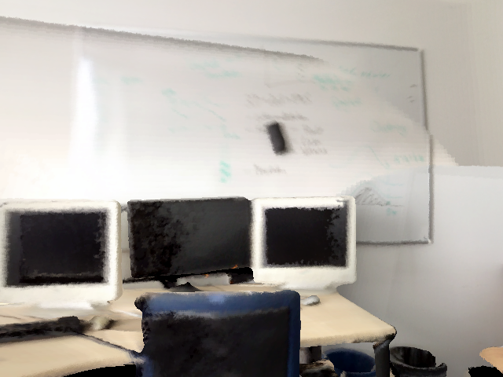

GPT-5.4-mini exploring ScanNet 3D scenes through the thinking-in-space interactive
render pipeline, answering ScanQA training questions. Every trajectory is scored on
three gates and only the GOOD ones are banked. Below: bank-wide statistics, then 30 random samples
(frames + per-turn reasoning + action + answer). Action mode; retry-until-pass, one GOOD per
question.
Bank summary
3,639
GOOD trajectories
535
distinct scenes
3,639
distinct questions
2.11
mean rounds (views)
2.06
mean <think> blocks / traj
~39
mean <think> tokens / block
97.6%
turns with <think>
18.1%
explored-to-find
Rounds per trajectory
2 views3369 (92.6%)
3 views194 (5.3%)
4 views48 (1.3%)
5 views12 (0.3%)
6 views10 (0.3%)
7 views3 (0.1%)
8 views3 (0.1%)
Action mix
turn_left759 (18.8%)
turn_right1749 (43.3%)
left220 (5.4%)
right537 (13.3%)
forward726 (18.0%)
backward31 (0.8%)
turn_up3 (0.1%)
turn_down6 (0.1%)
up1 (0.0%)
down6 (0.1%)
Scoring funnel — all 75,099 action trajectories attempted
What fraction of all attempts clear each gate. GOOD
requires all three plus 1<views≤8, non-degenerate, no buried views, no API failures.
grounded (object in final view)37661 (50.1%)
answer correct21172 (28.2%)
answerable from final frame11156 (14.9%)
GOOD (all gates)3852 (5.1%)
30 random samples
Q153 · scene0003_00
What type of cabinet is in between a water cooler and a trash can?

turn 0

turn 1
turn 0right
I need to inspect the scene better to identify the cabinet between the water cooler and the trash can, so I should move the camera first.
turn 1⟨answer⟩
The water cooler is visible near the center-left, and the trash can is at the lower left. The cabinet between them appears to be a wooden kitchen cabinet / cupboard.
I can already see a wall-mounted soap dispenser on the right side of the image, and it appears dark gray/black. I should confirm from a better angle before answering, but it is likely black.
turn 1⟨answer⟩
The wall-mounted soap dispenser is now clearly visible near the mirror and sink area, and it is white/light-colored.
I can already see a chair in front of a wooden dresser, with a desk nearby. I need one move before answering, so I'll adjust slightly to confirm the chair's relation.
turn 1⟨answer⟩
The chair is next to the desk/table and in front of the dresser.
The blue waste basket is likely near the desk, but I need a clearer view of the floor/desk area to locate it accurately. I’ll move slightly to the right to inspect around the desk and chair.
turn 1⟨answer⟩
The blue waste basket appears to be under or beside the desk on the right side of the room, near the chair and beneath the tabletop.
answer: Under the desk on the right side, next to the chair.
· GT: under desk
I can already see a whiteboard mounted on the wall next to the desk, but I should move once before answering per instructions. I’ll turn slightly to get a clearer view of the wall area.
turn 1⟨answer⟩
The wall next to the desk clearly has a whiteboard mounted on it, so that is the object asked about.
The chairs visible on the left and right appear to be dark brown/black leather. I should confirm with a slightly better view before answering, but the color is already fairly clear.
turn 1⟨answer⟩
The chair is visible in the new view and appears dark brown leather, with a very dark brown/black tone. I can answer now.
I can see a framed picture on the right wall, but the question asks what it is hanging next to. From this view, it appears to be next to a window with blinds/curtain area, but I should move slightly to confirm the wall context and nearby object.
turn 1⟨answer⟩
The picture is hanging next to the window/mirror area above the sink.
answer: the window/mirror area above the sink
· GT: next to mirror
I can partially see a doorway/opening near the corner, but the current view is cluttered and not ideal for color confirmation. I should move to get a clearer view of the corner door before answering.
turn 1turn_right
The turn_right view still doesn’t clearly show the corner door. I need a better angle, likely by turning or moving slightly to bring the room corner into view.
turn 2turn_right
The view now shows a wall and table, but the door in the corner is still not clearly visible. I need one more move, likely turning further to face the corner where the door is located.
turn 3⟨answer⟩
The door in the corner is now visible; it appears to be a medium brown/tan wooden door. I’m confident enough to answer.
What color is the coffee table in front of two chairs?

turn 0

turn 1
turn 0right
The coffee table in front of the two chairs appears to be light yellow / pale wood in the current view, but I need to move once before answering per instructions. I’ll step slightly closer/right to get a clearer look.
turn 1⟨answer⟩
The coffee table in front of the two chairs looks light yellow / pale wood.
What is on the wall next to a shelf and under another picture?

turn 0

turn 1
turn 0turn_left
I can already see a shelf on the left wall with framed pictures adjacent to it. The question asks what is on the wall next to a shelf and under another picture, which appears to be a framed picture/photo on the wall. To be sure, I should move a bit to get a clearer look at that area.
turn 1⟨answer⟩
The wall area next to the shelf and beneath another picture shows a framed picture on the wall.
I can already see the couch in the current view, but I need to inspect it more clearly to identify what’s on it. I'll move slightly closer/adjust view.
turn 1⟨answer⟩
The couch is visible now, and there appears to be a pillow/cushion on it. I’ll answer based on that visible object.
I can see part of a rectangular door on the left wall, but the question asks what is next to it. I should move slightly to get a clearer view of the door and nearby object(s), likely by turning toward it or stepping left.
turn 1⟨answer⟩
The rectangular door is visible ahead on the far wall. Immediately next to it, on the right side, there is a black armchair. That appears to be the object beside the door.
What shape is the brown desk in front of a window?

turn 0

turn 1
turn 0right
The current view shows a brown desk/cabinet in front of a window area, but the shape isn’t fully clear from this angle. I should move slightly to get a clearer look at the desk’s outline before answering.
turn 1⟨answer⟩
The brown desk in front of the window appears rectangular.
I can partially see a kitchen area, but the question asks what runs along the wall with a sink at the top, so I need a better view of that wall. I’ll move left to inspect the left side of the room and see the sink area more clearly.
turn 1⟨answer⟩
The sink is along the kitchen wall, and I can see a countertop running continuously along that wall. So what runs along the wall with the sink is a countertop.
I can already see a square white chair near the corner. It appears to be next to a floor lamp, so I’ll verify by moving slightly to get a clearer angle.
The current view is too partial and blurry to confidently identify the trash can on the floor. I should move to get a clearer angle, likely by turning or stepping slightly.
turn 1⟨answer⟩
I can now see the trash can near the left side of the room, and it appears to be black/dark gray. The question asks for its color, so I’ll answer with the most visible color.
I can’t clearly see the brown wooden table shape from this starting view, so I should move to get a better angle. Turning right should bring more of the room and furniture into view.
turn 1⟨answer⟩
The brown wooden table is now visible in the lower part of the view, and its top appears round rather than rectangular.
The current view shows beds and a chair-like object may be on the right, but the question asks what type of chair has arms. I need to move to inspect the chair more clearly before answering.
turn 1⟨answer⟩
The right side of the room is now visible, and there is an armchair/sofa-like seat near the curtains. The chair with arms is an armchair.
The picture on the wall is too small and blurry from this starting view. I should move closer and adjust angle to inspect the wall behind the monitor more clearly.
turn 1⟨answer⟩
I can now see the wall behind the monitor area. The picture appears to be a framed black-and-white portrait of a person.
answer: A framed black-and-white portrait of a person.
· GT: white and black picture behind monitor on wall
Where is the trash can on the floor of the other bin?

turn 0

turn 1
turn 0right
I can see a row of monitors and part of a room, but the trash can mentioned in the question is not clearly visible yet. I should move to get a better view of the floor area and the other bin.
turn 1⟨answer⟩
The trash can appears to be on the floor near the right side of the desk area, next to the other bin. It is positioned to the right of the monitors.
answer: On the floor to the right of the desk, beside the other bin.
· GT: right beside
I can partially see the bathroom vanity straight ahead, but the floor area under it is not clear enough from this starting view. I should move forward to get a better look at what’s on the vanity floor.
turn 1⟨answer⟩
The vanity area is now clearer. On the bathroom vanity floor, I can see a small trash can.
I can already see the toaster oven on the right side of the counter. Its overall shape appears rectangular/box-like, but I should move once to confirm the view more clearly before answering.
turn 1⟨answer⟩
The toaster oven is clearly box-shaped and rectangular.
The piano is on the right side of the current view, and there appears to be a small bench directly in front of it. I should confirm by moving slightly to get a clearer angle.
turn 1⟨answer⟩
The piano is clearly visible on the right, and there is a small bench/stool placed directly in front of it.
I can already see a desk with a computer and a wooden chair in front of it. The chair appears to be light brown/tan wood. I’ll move once to confirm the view more clearly before answering.
turn 1⟨answer⟩
The chair in front of the computer appears to be a light brown/wood color with a beige seat back cushion.
The current view shows shelves and storage boxes, but no red file cabinet is clearly visible. I should move to get a broader or different angle, likely by turning to scan the room for the cabinet.
turn 1⟨answer⟩
The red file cabinet is visible on the left side of the scene, partially in view beside the bookshelf.
answer: On the left side of the room, partially visible at the left edge of the view.
· GT: left to shelf
The range cooktop is likely on the right side, but the current view is partially obscured. I should move to get a clearer look at what is on/included with the cooktop area.
turn 1⟨answer⟩
The range cooktop is visible now, and there appears to be a large hood/vent included above it. So the cooktop also includes a hood vent.